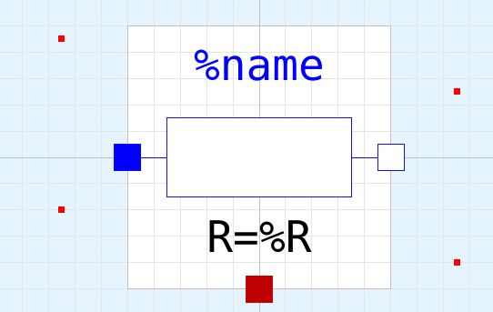
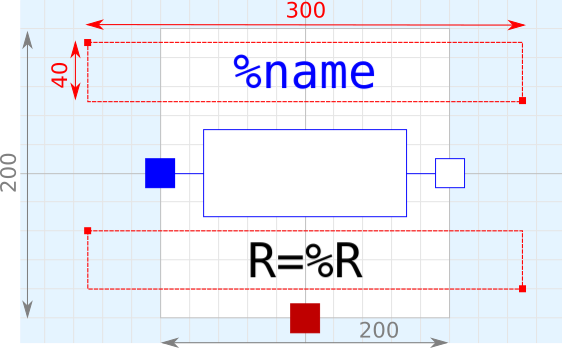
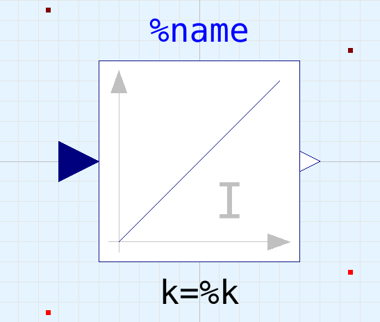
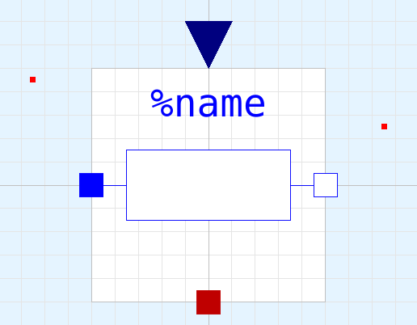
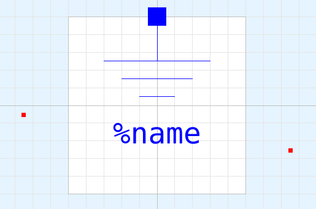
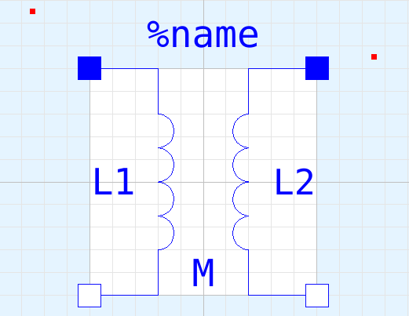

IconsIcon design |
|
Information
This information is part of the Modelica Standard Library maintained by the Modelica Association.
The icon of a Modelica class shall consider the following guidelines:
Color and Shapes
The main icon color of a component shall be the same for all components of one library. White fill areas of an icon shall not be used to hide parts of an icon, see #2031. In the Modelica Standard Library the following color schemes apply:
| Package | Color RGB code | Color sample |
|---|---|---|
| Modelica.Blocks | {0,0,127} | |
| Modelica.ComplexBlocks | {85,170,255} | |
| Modelica.StateGraph | {0,0,0} | |
| Modelica.Electrical.Analog | {0,0,255} | |
| Modelica.Electrical.Digital | {128,0,128} | |
| Modelica.Electrical.Machines | {0,0,255} | |
| Modelica.Electrical.MultiPhase | {0,0,255} | |
| Modelica.Electrical.QuasiStationary | {85,170,255} | |
| Modelica.Electrical.Spice3 | {170,85,255} | |
| Modelica.Magnetic.FluxTubes | {255,127,0} | |
| Modelica.Magnetic.FundamentalWave | {255,127,0} | |
| Modelica.Magnetic.QuasiStatic | {255,170,85} | |
| Modelica.Mechanics.MultiBody | {192,192,192} | |
| Modelica.Mechanics.Rotational | {95,95,95} | |
| Modelica.Mechanics.Translational | {0,127,0} | |
| Modelica.Fluid | {0,127,255} | |
| Modelica.Media | none | |
| Modelica.Thermal.FluidHeatFlow | {0,0,255} | |
| Modelica.Thermal.HeatTransfer | {191,0,0} | |
| Modelica.Math | none | |
| Modelica.ComplexMath | none | |
| Modelica.Utilities | none | |
| Modelica.Constants | none | |
| Modelica.Icons | none | |
| Modelica.SIunits | none |
Icon size
The icon of a Modelica class shall not be significantly greater or smaller than the default Diagram limits of 200 units x 200 units. These default diagram limits are
- -100 units ≤ horizontal coordinate ≤ +100 units
- -100 units ≤ vertical coordinate ≤ +100 units
If possible, the icon shall be designed such way, that the icon name %name
and the most significant parameter can be displayed within the vertical Diagram range of the icon.
(a) 
(b) 
Fig. 1: (a) Typical icon, (b) including dimensions
Component Name
The component name %name shall be in RGB (0,0,255) blue color.
- Text height: 40 units
- Text width: 300 units
The text shall be located above the actual icon. If there is enough space, the upper text limit of the component name shall be 10 units below the upper icon boundary, see Fig. 1.
If the icon is as big as the entire icon range of 200 units x 200 units, e.g. in blocks, the component name shall be placed above the icon with vertical 10 units of space between icon and lower text box, see Fig. 2.

Fig. 2: Block component name
If there is a connector located at the top icon boundary and it is obvious that this connector influences the model behavior compared to a similar model without such connector, then a line from the connector to the actual icon shall be avoided to keep the design straight, see Fig. 4. If it is required to use a line indicating the connector dependency, then the line shall be interrupted such that this line does not interfere with component name.

Fig. 3: Component name between actual icon and connector
In some cases, if there is not alternative, the component name has to be placed below the actual icon, see. Fig. 4.

Fig. 4: Component name below actual icon
Parameter Name
One significant parameter shall be placed below the icon, see Fig. 1 and 2. The parameter name shall be RGB (0,0,0) black color.
- Text height: 40 units (or 30 units, minimum 20 units, if required)
- Text width: 300 units
The parameter text box shall be placed 10 units below the actual icon.
Connector location
Physical connectors shall always be located on the icon boundary. Input and output connector shall be placed outside the icon, see Fig. 2 and 3. Preferred connector locations are:
- at the four corners of the icon diagram, see Fig. 5
- at vertical or horizontal symmetry line of an icon, see Fig. 1-3
- alternative connection points shall be located in a raster of 20 units (or 10 units) if required, see Fig. 4

Fig. 5: Connectors located at the four corners of the icon diagram
Diagram icons
Icons drawn in the Diagram layer shall be avoided. Particularly, icons of Diagram layer shall be avoided which are equal to the icons of the Icon layer. Any graphical illustrations shall be moved to the HTML documentation instead.